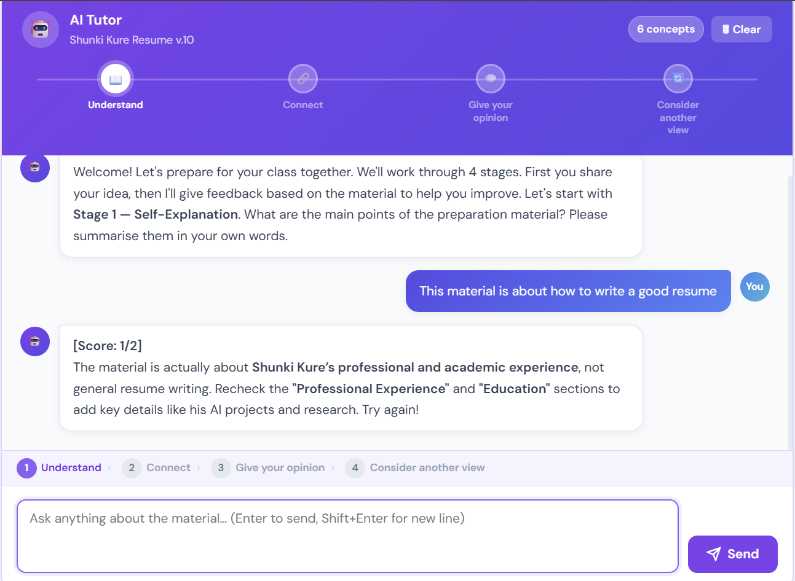
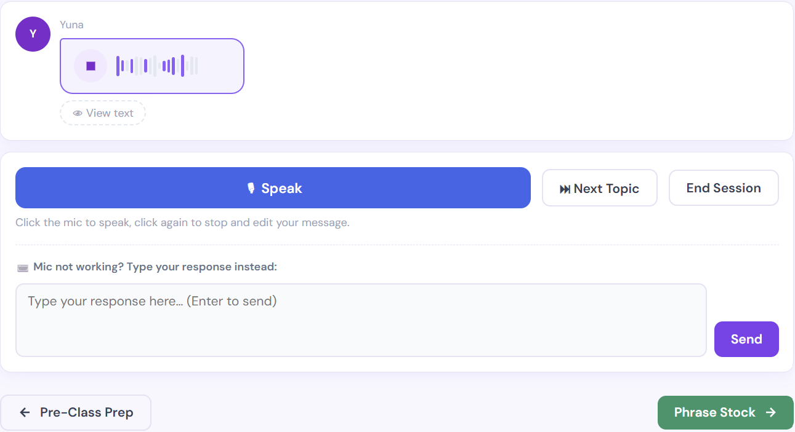
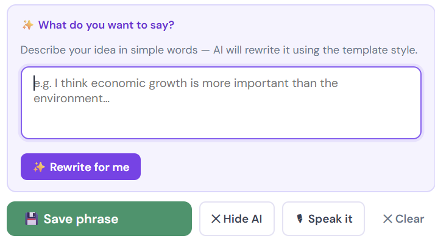

The Problem
International students may have meaningful ideas to contribute to classroom discussions but struggle to express them spontaneously in English. Students may think, "I have something I want to share, but it is difficult to form sentences immediately," or worry that sharing an idea others do not understand could be embarrassing.
This challenge affects not only individual participation but also the classroom learning experience. Valuable perspectives and ideas may never become part of the discussion simply because students need more time and support to prepare how they will communicate them.
Discuss Ready addresses this gap through a structured pre-class preparation process. Learners deepen their understanding of course materials, develop their ideas in advance, and practice expressing those ideas in English, helping them enter classroom discussions better prepared to participate and contribute.
Instructional Design Approach
ADDIE
Analyze
Identified a participation barrier through international students' experiences: students often had ideas to contribute but hesitated to speak because they needed more time to formulate their thoughts in English.
Design
Designed a scaffolded preparation experience using activities such as self-explanation, AI-supported speaking practice, and sentence preparation to help students develop and rehearse ideas before class.
Develop
Developed the Discuss Ready prototype and integrated the learning activities into a guided pre-class preparation experience.
Implement
Conducted six rounds of user testing with nine international students to evaluate how learners interacted with the experience and prepared for classroom discussion.
Evaluate
Observed an increase in one learner's classroom speaking frequency from approximately two to five contributions per class, while usability findings informed iterative improvements to the prototype.
ICAP Framework
Passive
Students read and review course preparation materials.
Active
Students identify and organize relevant information from the materials.
Constructive
Students explain concepts in their own words and connect them with prior knowledge and personal experiences.
Interactive
Students enter class prepared with ideas they can contribute, discuss, and develop with others.
Discuss Ready is designed to help learners move from consuming course material toward constructing their own understanding and preparing to interact with others. The pre-class activities particularly scaffold the transition from Active to Constructive, so students arrive with ideas they are ready to share during classroom discussion.
Self-Explanation
To support the Constructive phase, learners explain concepts from the assigned reading in their own words with AI-guided prompts and connect those concepts to their prior knowledge and experiences. This helps learners develop personally meaningful interpretations that can become potential contributions to classroom discussion.
How AI Supports Learning
AI as an Adaptive Learning Scaffold
AI supports learners at three points in the preparation process, with each interaction designed for a different learning need.
Self-Explanation
Develop UnderstandingExplains the course material in their own words.
Evaluates the response, provides targeted feedback, and asks follow-up questions.
Connect course concepts with prior knowledge and personal experiences.

Rehearsal
Practice Spontaneous DiscussionUses the ideas developed in the previous phase in a simulated conversation with an AI discussion partner.
Acts as a discussion partner with time-limited responses that recreate some of the pressure of spontaneous classroom discussion.
Practice expressing ideas before participating in class.

Sentence Preparation
Prepare Language for ParticipationExpresses what they want to say in their own words.
Organizes and refines the language into a clearer, grammatically appropriate expression while preserving the learner's original idea.
Prepare language learners can save and use during classroom discussion.

Learner Agency by Design
Across all three interactions, AI supports the learner's thinking and communication rather than generating ideas on their behalf. Learners develop the original interpretation or contribution first, while AI provides feedback, rehearsal opportunities, and language support to help them communicate it effectively.
Iteration & Evaluation
Discuss Ready was refined through six rounds of user testing with nine international students. Testing focused on both the quality of AI-supported interactions and the usability of the learning experience.
1. Inconsistent AI Scaffolding
AI responses were inconsistent and sometimes continued asking follow-up questions without determining when learners were ready to progress.
Added a structured evaluation rubric and progression rules so the AI could determine when additional scaffolding was needed and when learners were ready to move to the next stage.
2. Difficulty Accessing Saved Phrases
Learners had difficulty locating the phrases they had prepared and saved for classroom discussion.
Added easier access to saved phrases at the beginning of the experience so learners could quickly review their prepared contributions.
3. Unclear Navigation
Learners were sometimes unsure how to move between stages of the preparation process.
Added clear Back and Next buttons to improve navigation and create a more intuitive learning flow.
Final Outcome
Students developed discussion-ready contributions by connecting course concepts to their personal experiences, rehearsing their ideas with AI, and preparing key sentences before class.
By preparing their ideas and language in advance, learners reduced the amount of real-time language formulation required during classroom discussion. Rather than generating responses from scratch, students could draw from prepared ideas and adapt their phrasing as the discussion evolved, supporting more confident and meaningful participation.
Try Discuss Ready Live